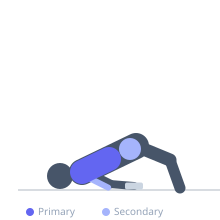
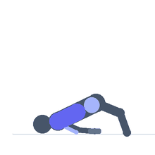

Exercise guide / Single-Arm Floor Dumbbell Glute Bridge Press
Single-Arm Floor Dumbbell Glute Bridge Press
A floor press variation combining a unilateral dumbbell press with a simultaneous glute bridge hold. The supine position on the floor limits range of motion naturally, protecting the shoulder, while the bridge demand fully activates the glutes and core. The unilateral load creates rotational forces that the core must resist, integrating anti-rotation stability with the pressing stimulus.
Primary muscles
pectoralis major sternal
Secondary muscles
triceps long head
gluteus maximus
Stabilizers
internal oblique
external oblique
transverse abdominis
Equipment
Dumbbell (Fixed)


Starting position
- Lie on the floor with knees bent, feet flat. Perform a glute bridge and hold the hips elevated. Hold one dumbbell in the working hand at chest level, elbow bent. The opposite hand rests on the floor or on the hip.
Setup
- No equipment needed beyond one dumbbell. Practice the glute bridge hold first before adding the press.
Steps
- Step 1: Perform a glute bridge: lift hips so body forms a line from knees to shoulders. Maintain this throughout.
- Step 2: With the working arm, press the dumbbell from chest to full arm extension.
- Step 3: Lower back to chest level under control, keeping the bridge hold the entire time.
- Step 4: Repeat all reps on one side, then lower hips, rest, and switch to the other arm.
Coaching cues
- Squeeze the glutes to keep the hips up — they should not move during the press
- Press from the chest — the body tries to rotate, resist it
Breathing
- Exhale on the press, inhale on the return. Continue breathing steadily throughout the bridge hold.
Range of motion
- Floor contact limits elbow travel naturally. Press from that stop to full arm extension.
Tempo
- 2-1-2-0
Common mistakes
- Hips dropping during the press — the bridge must be maintained throughout all reps
- Rotating the torso toward the working arm — stay square
- Using too heavy a dumbbell that causes the hip to drop for balance
Safety
- If unable to maintain both the bridge and the press form simultaneously, reduce the dumbbell weight
- Ensure the floor is comfortable — a mat is recommended
Training
- hypertrophy: 8–12 reps
- hypertrophy: 3–4 sets
- Rest: {'hypertrophy': 90}